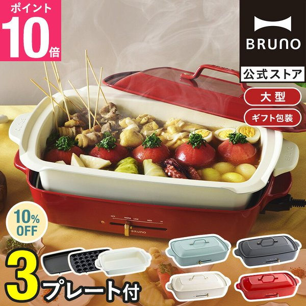
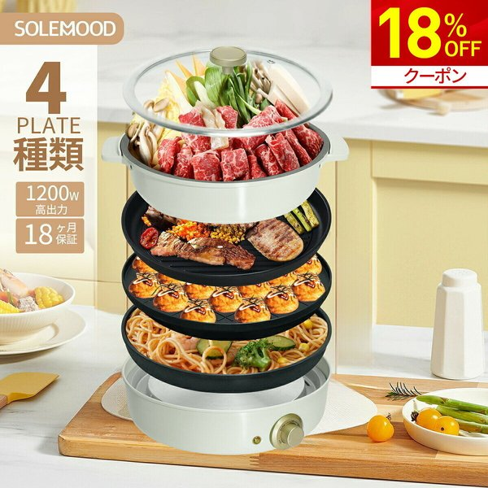
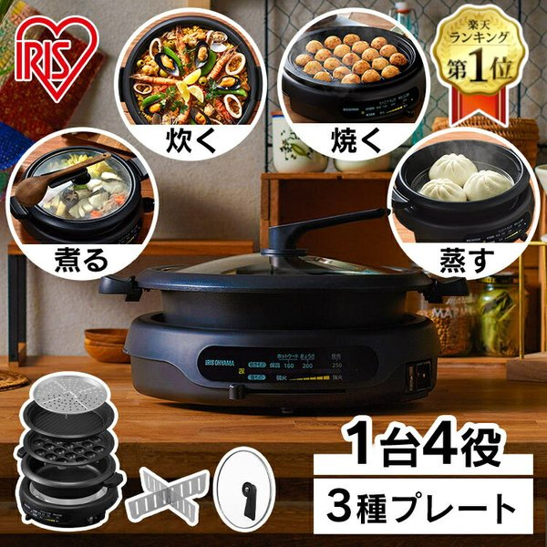
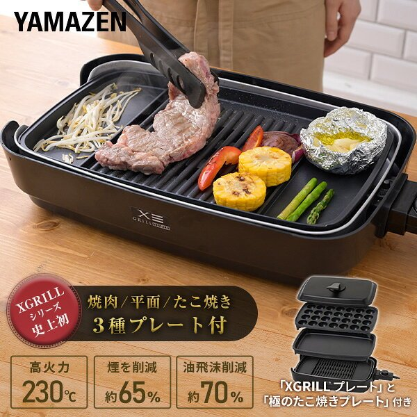
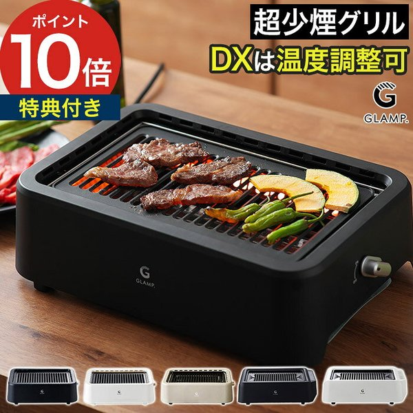
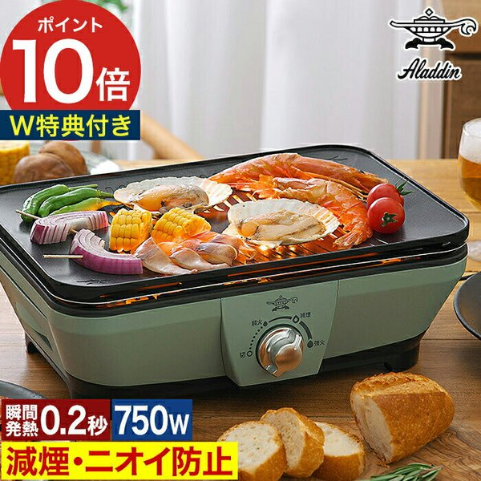
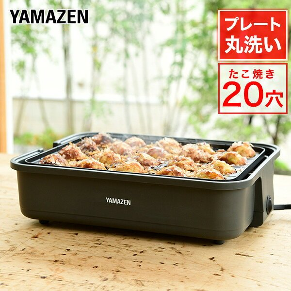
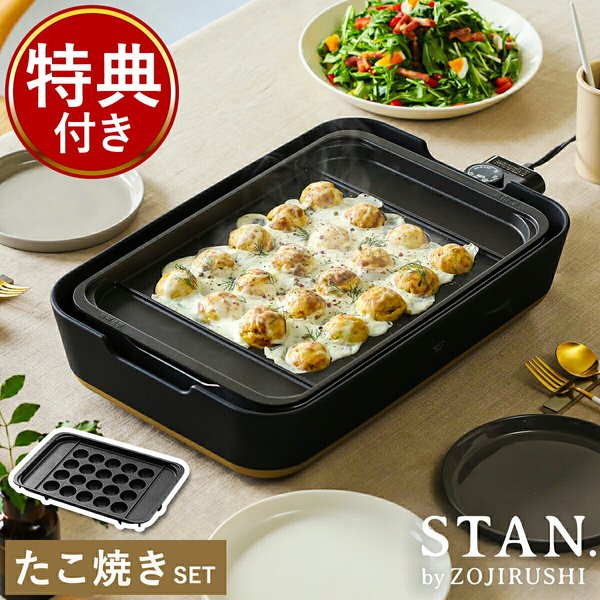
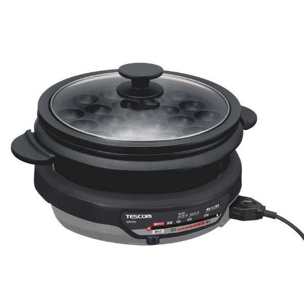

【2026年冬】忘年会・クリスマスはおうちで！ホットプレート・たこ焼き器・減煙焼肉グリル＆電気グリル鍋おすすめ10選
忘年会やクリスマスの集まりは、外に予約を取るより家で焼くほうが気楽です。ホットプレートが1台あれば、焼肉もたこ焼きも鍋も同じテーブルで済みます。
選ぶ軸は3つ。卓上で何人分を焼けるか、煙と匂いをどこまで抑えられるか、そしてプレートが洗えるかです。大人数なら3〜4枚プレートの大型、2人ならコンパクト。焼肉の煙が気になる部屋では、減煙タイプや遠赤外線グリラーを選ぶと換気の負担が減ります。プレートが着脱できるかどうかは、使ったあとの片付けの時間に直結します。年末は鍋と焼き物が交互に続くので、1台で何役もこなせる形を選んでおくと、食器を増やさずに済みます。
本記事では、楽天市場で人気・高評価の忘年会パーティー家電10選を、実売価格とレビュー評価つきで写真付き紹介します。
- おすすめ10選 スペック・特徴比較表
- BEST 1｜象印 ホットプレート やきやき EA-KJ30-BA（3枚プレート・焼肉／たこ焼き）
- BEST 2｜BRUNO グランデ ホットプレート 大型・プレート2種（公式ストア）
- BEST 3｜SOLEMOOD ホットプレート 4種プレート 4人用・大型（グリル鍋兼用）
- BEST 4｜アイリスオーヤマ グリル鍋 3枚プレート（焼肉・たこ焼き・鍋）
- BEST 5｜山善 XGRILL Triple ホットプレート 3枚（減煙・煙の少ない焼肉グリル）
- BEST 6｜GLAMP. 超少煙グリル DX 焼肉グリル（減煙・遠赤外線）
- BEST 7｜アラジン 焼肉 グラファイトグリラー（遠赤外線・減煙）
- BEST 8｜山善 たこ焼き器 着脱式プレート 20穴 YOH-200
- BEST 9｜象印 スタン STAN. ホットプレート たこ焼きプレートセット（大型・深型）
- BEST 10｜テスコム グリルなべ GP9100H 3.4L（煮る・焼く・蒸す・たこ焼き21個）
- 【読者負担0円】買わなくても得する無料サービス
- まとめ：忘年会パーティー家電10選の選び方
| 順位 | 商品名 | ブランド | 最大の特徴・おすすめ理由 | 総合評価 |
|---|---|---|---|---|
| BEST 1 | 象印 ホットプレート やきやき EA-KJ30-BA（3枚プレート・焼肉／たこ焼き） | 象印（ZOJIRUSHI） | 3枚プレートで焼肉・たこ焼き・お好み焼きに対応 | 4.70 |
| BEST 2 | BRUNO グランデ ホットプレート 大型・プレート2種（公式ストア） | BRUNO（ブルーノ） | 4人前後で囲める大型サイズ | 4.61 |
| BEST 3 | SOLEMOOD ホットプレート 4種プレート 4人用・大型（グリル鍋兼用） | SOLEMOOD | 4種プレートで焼く・煮る・焼きそばまで | 4.54 |
| BEST 4 | アイリスオーヤマ グリル鍋 3枚プレート（焼肉・たこ焼き・鍋） | アイリスオーヤマ | 鍋と焼き物を1台で兼ねる | 4.45 |
| BEST 5 | 山善 XGRILL Triple ホットプレート 3枚（減煙・煙の少ない焼肉グリル） | 山善（YAMAZEN） | 脂が落ちて煙が出にくい焼肉プレート | 4.27 |
| BEST 6 | GLAMP. 超少煙グリル DX 焼肉グリル（減煙・遠赤外線） | GLAMP.（グランプ） | 水を張る構造で煙と匂いを抑える | 4.47 |
| BEST 7 | アラジン 焼肉 グラファイトグリラー（遠赤外線・減煙） | アラジン（Aladdin） | 遠赤外線の高温で一気に焼き上げる | 4.71 |
| BEST 8 | 山善 たこ焼き器 着脱式プレート 20穴 YOH-200 | 山善（YAMAZEN） | レビュー4,133件の売れ筋 | 4.45 |
| BEST 9 | 象印 スタン STAN. ホットプレート たこ焼きプレートセット（大型・深型） | 象印（ZOJIRUSHI） | 評価4.77・レビュー145件 | 4.77 |
| BEST 10 | テスコム グリルなべ GP9100H 3.4L（煮る・焼く・蒸す・たこ焼き21個） | テスコム（TESCOM） | 3.4Lの深鍋で4人前の鍋が作れる | 4.29 |
象印 ホットプレート やきやき EA-KJ30-BA（3枚プレート・焼肉／たこ焼き）

象印の「やきやき」は、平面・焼肉・たこ焼きの3枚プレートが付いたホットプレート。焼肉はもちろん、たこ焼きやお好み焼きまで同じ台で作れます。プレートは着脱式で、食卓に運んでそのまま取り分けられます。レビュー1,122件・評価4.70と、ホットプレートでは定番の人気モデル。忘年会の最初の1台として迷ったら、まずこれを選ぶと失敗が少ないです。楽天市場での実売価格は約11,930円（2026年11月時点）。
- 3枚プレートで焼肉・たこ焼き・お好み焼きに対応
- レビュー1,122件・評価4.70の人気モデル
- プレート着脱式で洗いやすい
- プレート3枚をしまう場所を確保しておく
BRUNO グランデ ホットプレート 大型・プレート2種（公式ストア）

ブルーノの大型モデル「グランデ」。コンパクトタイプより一回り大きく、4人前後で囲めるサイズです。プレート2種と深鍋が付き、焼肉・鍋・煮込みまで1台で対応します。最大250℃の無段階調整で、焼き加減を細かく決められます。テーブルに置いたままでも絵になるデザインで、クリスマスの食卓にも馴染みます。楽天市場での実売価格は約18,850円（2026年11月時点）。
- 4人前後で囲める大型サイズ
- プレート2種＋深鍋付き
- 公式ストアで評価4.61・レビュー392件
- 本体が大きめなので、置き場所を先に決めておく
SOLEMOOD ホットプレート 4種プレート 4人用・大型（グリル鍋兼用）

4枚のプレートが付いた大型ホットプレート。平面・焼肉・たこ焼き・深鍋と、忘年会で使う調理がひととおり揃います。高さのある本体は鍋料理のときも火の通りが安定し、4人で囲んでも皿が足りなくなりません。レビュー160件・評価4.54で、価格は1万3千円台。1台で何役もこなしたい家に向いています。楽天市場での実売価格は約13,700円（2026年11月時点）。
- 4種プレートで焼く・煮る・焼きそばまで
- 4人用の大型サイズ
- 評価4.54・レビュー160件
- 4枚のプレートを収納する場所が要る
アイリスオーヤマ グリル鍋 3枚プレート（焼肉・たこ焼き・鍋）

グリル鍋とホットプレートを1台にまとめた3枚プレートタイプ。深鍋で鍋料理をしながら、焼肉プレートで肉を焼く、という使い方ができます。1台4役なので、忘年会とクリスマスでメニューを変えても同じ台で済みます。価格は1万3千円前後で、レビュー92件・評価4.45。まず1台だけ買うなら、鍋と焼き物の両方ができるこの形が便利です。楽天市場での実売価格は約12,980円（2026年11月時点）。
- 鍋と焼き物を1台で兼ねる
- 3枚プレートでメニューを変えられる
- 評価4.45・レビュー92件
- 深鍋は2〜3人分なので、大人数なら大型を選ぶ
山善 XGRILL Triple ホットプレート 3枚（減煙・煙の少ない焼肉グリル）

煙の少ない焼肉グリルとして作られた3枚プレートのホットプレート。焼肉プレートは余分な脂が下に落ちる構造で、部屋にこもる煙と匂いを抑えます。平面プレートとたこ焼きプレートも付き、焼き肉のあとにたこ焼き、という流れも1台で作れます。価格は1万1千円台で、評価4.27・レビュー91件。換気が弱い部屋の忘年会に向いています。楽天市場での実売価格は約11,800円（2026年11月時点）。
- 脂が落ちて煙が出にくい焼肉プレート
- 3枚プレートでたこ焼きも作れる
- 1万円台で買える減煙タイプ
- 完全に無煙ではないので、換気はしたほうがよい
GLAMP. 超少煙グリル DX 焼肉グリル（減煙・遠赤外線）

遠赤外線で焼く焼肉グリル。肉の下に水を張る構造で、脂が直接落ちて燃えるのを抑え、煙と匂いを減らします。750Wの火力で、焼き上がりは外が香ばしく中はふっくら。レビュー455件・評価4.48と、減煙グリルの中では口コミが多く集まっています。ホットプレートほど場所を取らないので、焼肉だけを頻繁にやる家に向いています。楽天市場での実売価格は約16,500円（2026年11月時点）。
- 水を張る構造で煙と匂いを抑える
- レビュー455件・評価4.48
- 焼肉専用で置き場所を取りにくい
- 焼肉専用なので、たこ焼きや鍋には別の器具が要る
アラジン 焼肉 グラファイトグリラー（遠赤外線・減煙）

グラファイトヒーターの遠赤外線で焼くグリラー。高温で一気に焼き上げるので、肉の表面が早く固まり、肉汁が落ちにくいのが特徴です。プレートは着脱式で、使ったあとは洗えます。評価4.71・レビュー72件と満足度は高め。煙と匂いを抑えながら、焼肉屋のような焼き上がりを家で出したい人に向いています。楽天市場での実売価格は約18,700円（2026年11月時点）。
- 遠赤外線の高温で一気に焼き上げる
- 評価4.71と満足度が高い
- プレート着脱式で洗える
- 価格は1万8千円台で、専用グリルとしては高め
山善 たこ焼き器 着脱式プレート 20穴 YOH-200

20穴のたこ焼き器で、プレートは着脱式。焼き終わったらプレートだけ外して洗えるので、ソースの焦げ付きを落としやすいです。価格は4千円を切り、レビュー4,133件・評価4.45と、たこ焼き器では売れ筋の定番。忘年会で子どもや友人が集まるとき、1台あると場が回ります。ホットプレートより穴が深く、外はカリッと中はとろりと焼けます。楽天市場での実売価格は約3,980円（2026年11月時点）。
- レビュー4,133件の売れ筋
- 20穴で大人数でも焼ける
- 4千円を切る手頃さ
- たこ焼き専用なので、他の料理には使えない
象印 スタン STAN. ホットプレート たこ焼きプレートセット（大型・深型）

象印のスタンシリーズのホットプレートに、たこ焼きプレートを組み合わせたセット。深型の本体は焼肉の脂が跳ねにくく、たこ焼きプレートは焼き上がりが揃います。デザインは落ち着いた黒で、リビングに出しっぱなしでも馴染みます。レビュー145件・評価4.77と満足度が高く、見た目も重視したい家に向いています。楽天市場での実売価格は約19,250円（2026年11月時点）。
- 評価4.77・レビュー145件
- 深型で脂が跳ねにくい
- たこ焼きと焼肉を1台で
- 価格は1万9千円台で、ホットプレートとしては高め
テスコム グリルなべ GP9100H 3.4L（煮る・焼く・蒸す・たこ焼き21個）

3.4Lの深鍋と焼きプレート、たこ焼きプレートが付いたグリル鍋。煮る・焼く・蒸すの1台3役で、忘年会の鍋から翌日の焼き物まで使えます。鍋は直火にも対応し、食卓からコンロへ移せます。価格は1万円前後と手頃ですが、レビューは7件と少なめなので、口コミはこれから増える段階です。楽天市場での実売価格は約10,043円（2026年11月時点）。
- 3.4Lの深鍋で4人前の鍋が作れる
- 直火対応でコンロにも移せる
- 1万円前後で買える
- レビューは7件と少なく、口コミはこれから増える段階
この記事の商品を買う前に、まずは無料で得する選択肢をチェック。どれも登録・利用は0円で、無料期間中に解約すれば料金はかかりません。読みたい雑誌がある人、ポイントを貯めたい人、アンケートなら気軽という人、それぞれに合うものを選べます。
初回31日無料・無料期間中に解約すれば0円 → 楽天ポイントモール｜登録無料で毎日ポイ活
買い物なしでもポイントが貯まる無料サービス → 楽天インサイト｜アンケートに答えてポイント
登録無料・すきま時間のアンケートで貯まる → 楽天カード｜年会費永年無料
新規発行・年会費ずっと0円 →
4つのサービスの違いと使い分けは「出費0円で得する！買わずにポイントが貯まる無料サービス厳選4選」でまとめています。
💡 まとめ：忘年会パーティー家電10選の選び方
忘年会の準備は、ホットプレート1台とプレートの種類でほとんど決まります。大人数なら3〜4枚プレートの大型、2人ならコンパクトタイプ。焼肉の煙が気になるなら減煙グリルか遠赤外線グリラーを選ぶと、換気を気にせず食べられます。たこ焼きは専用器のほうが穴の数が多く、焼き上がりが揃います。グリル鍋は鍋料理と焼き物を1台で兼ねられるので、年末の食卓が続く時期に向いています。買う前に、テーブルの奥行きと収納場所を測っておくと、届いてから置き場所に困りません。プレートが着脱式かどうかも、毎回洗う前提なら必ず確認してください。
楽天市場では「5と0のつく日」や「お買い物マラソン」などのキャンペーンに合わせて購入すると、ポイント還元が最大化してお得に手に入ります。ぜひチェックしてみてくださいね。